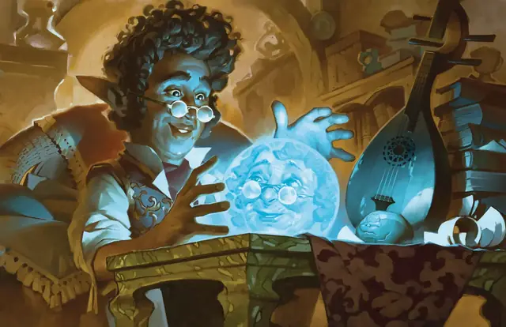

Наблюдение
Scrying
5 уровень, Прорицание

Время сотворения 10 минут
Дистанция На себя
Компоненты В, С, М (фокусировка стоимостью не менее 1000 ЗМ, как хрустальный шар, зеркало или полная водой купель)
Длительность Концентрация, вплоть до 10 минут
Классы Бард, Волшебник, Друид, Жрец, Колдун
Подклассы Картограф (Артефактор), Домен света (Жрец), Клятва возмездия (Паладин)
Вы можете видеть и слышать выбранное вами существо, находящееся на одном с вами плане бытия. Цель должна совершить спасбросок Мудрости с модификаторами, зависящими от того, насколько хорошо вы знаете цель и какого рода физическую связь с ней имеете. Цель не понимает, зачем она совершает спасбросок, но она чувствует беспокойство.
| Ваши знания о цели... | Модификатор спасброска |
| Через посредников (вы только слышал о цели) | +5 |
| Из первых рук (вы встречались с целью) | +0 |
| Подробные (вы хорошо знаете цель) | -5 |
| У вас есть... | Модификатор спасброска |
| Портрет или другое изображение цели | -2 |
| Одежда или другие вещи цели | -4 |
| Часть тела, локон волос, ноготь цели | -10 |
При успехе спасброска заклинание не влияет на цель, а вы не можете сотворять это заклинание на неё в течение следующих 24 часов.
При провале заклинание создаёт Невидимый, неосязаемый сенсор в пределах 10 футов от цели. Вы можете видеть и слышать так, будто находитесь на месте сенсора. Сенсор перемещается вместе с целью, всегда оставаясь в 10 футах от неё, пока длится заклинание. Существо, способное видеть сенсор, воспринимает его как светящийся шар размером с ваш кулак.
Вы можете выбрать целью не существо, а место, которое видели раньше. В таком случае сенсор появляется в указанном месте и не перемещается.